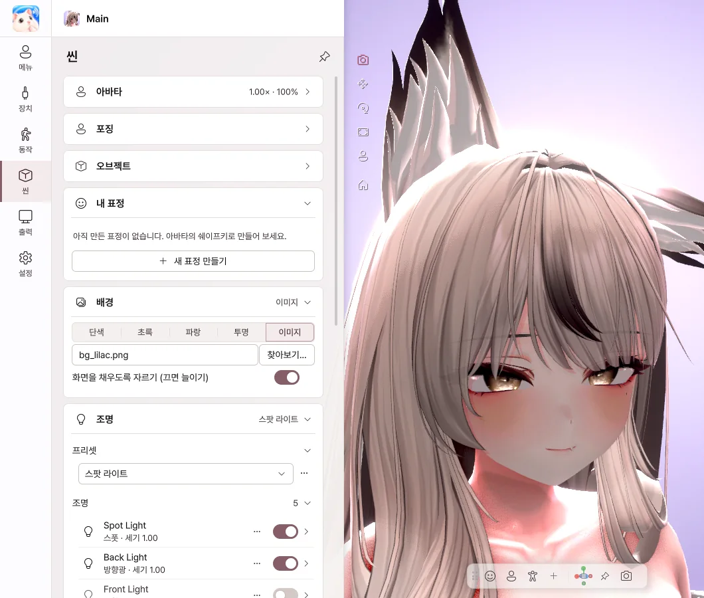
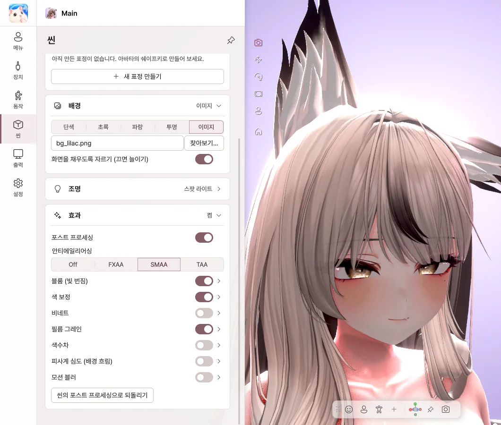

8. 씬
배경, 조명, 효과를 고릅니다.
조명

- 프리셋에서 분위기를 고르면 조명이 한 번에 바뀝니다.
- 라이트마다 스위치로 켜고 끄고, 밝기와 색을 바꿀 수 있습니다.
- 라이트 추가로 얼굴 라이트, 보조광, 림 라이트, 방향광, 점광, 스폿을 더합니다.
- 마음에 드는 조명은 프리셋으로 저장해 두고, 고친 뒤에는 변경 내용을 프리셋에 저장합니다.
라이트 자세히
| 항목 | 하는 일 |
|---|---|
| 색 | 색 사각형, RGB, HEX 입력, 스포이드로 화면의 색을 집어 옵니다. 색온도 사용을 켜면 따뜻한 빛 · 차가운 빛으로 고릅니다. |
| 위치 · 방향 · 대상 | 기울기 · 회전 · 롤 각도, 아바타를 따라 움직일지, 얼굴 같은 대상 바라보기를 정합니다. |
| 그림자 · 범위 | 그림자와 그 강도, 부드러운 경계, 빛이 닿는 범위, 스폿의 원뿔 각도를 정합니다. |
뷰에서 라이트를 고르면 손잡이가 나옵니다.
- 방향 손잡이를 끌어 라이트가 비추는 곳을 바꿉니다. 아래 · 회전 각도가 함께 표시됩니다.
- 점광 · 스폿은 X · Y · Z 화살표로 한 방향씩 옮기고, 빛이 닿는 범위가 뷰에 그려집니다.
- 방향광은 X · Y · Z 회전 링으로 돌립니다. 방향광은 위치와 상관없이 방향만 조명에 영향을 줍니다.
- Ctrl을 누른 채 끌면 15° · 10 cm 단위로 움직입니다.


배경
| 선택 | 이럴 때 |
|---|---|
| 단색 | 원하는 색 배경 |
| 초록 · 파랑 | 방송 프로그램에서 크로마키로 지울 때 |
| 투명 | Spout2로 배경 없이 보낼 때 |
| 이미지 | 그림을 배경으로 쓸 때 (확대/축소와 좌우 · 상하 위치 조절) |


효과

- 블룸 — 밝은 부분이 은은하게 번집니다.
- 색 보정 — 밝기, 대비, 채도, 색온도를 맞춥니다.
- 피사계 심도 — 배경을 흐리게 해서 아바타를 돋보이게 합니다. 얼굴에 자동 초점을 켜면 얼굴을 따라 초점을 맞춥니다.
- 비네트 · 필름 그레인 — 화면 가장자리와 질감에 분위기를 더합니다.
- 색수차 · 모션 블러 · 안티에일리어싱 등도 켤 수 있고, 모든 슬라이더는 숫자를 직접 입력할 수 있습니다.
셰이더
아바타에 쓴 셰이더를 그대로 보여 줍니다. Poiyomi, lilToon 등 주요 셰이더에서 확인했습니다. AudioLink와 미러 감지는 지원하지 않습니다.